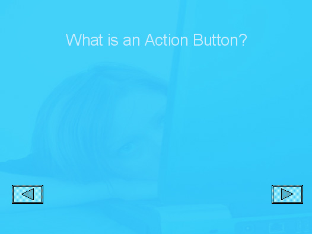

Free
powerpoint
Tutorials
|
Free
powerpoint
Tutorials
|
|
 home home |
Stay at Home and Learn | ||||
Resize and Move an Action Button |
|||||
|
The button your created on the previous page is too big at the moment, and in the wrong place. To remedy this, right click your selected button to see a context menu:
Select Format AutoShape to see the following dialogue box appear: Click the dropdown list under Color, and select a colour for your button. We chose a light blue colour, and put a tick in the box for semitransparent. Click the Preview button to see what it looks like. Don't click OK, though. Click the Size tab instead: Change the Height to 1.5 cm, and the Width to 2.5 cm. Click the Preview button, then click the Position tab at the top: This button will be going in the bottom right of the slide. So set the Horizontal position to 22 cm, and the Vertical to 15 cm. Click OK and your first button should be in place. We'll keep all the Back and Forward buttons in the same position. That way, they won't look as though they are jumping about when moving from slide to slide: No back button is needed on the first slide, of course. So, from the Outline View on the left, click your second slide (or insert one if you haven't got a slide 2). Add a Title, and delete the text area, and the slide will look like this: You don't have to draw a new forward button again. Click back on slide 1, and click your forward button to select it. From the PowerPoint menu, click Edit > Copy. Now go back to slide 2 and click Edit > Paste. PowerPoint will paste a new Forward button in the same place as the first one. To add a back button to slide 2, again click Slide Show > Action Buttons from the menu bar. This time, select the Back arrow, just to the left of the Forward arrow. Draw a Back button on slide 2. Click OK when you see the Action Settings dialogue box (but make sure it says Previous Slide under Hyperlink to). Resize and move your Back button in the same way you did for the Forward button. Set the Colour, and Size to the same values as before. For the Position, set the Vertical to 15 cm again, but set the Horizontal to 1 cm. Your slide 2 should then look like this:  Test out your presentation so far by pressing the F5 key on your keyboard. When your presentation starts, click your new buttons and see if they work OK. Insert a new slide, and add the following Title at the top: Click the globe to load a web page Copy and paste your two buttons from slide two over to your new slide 3. PowerPoint will place them in the same positions as slide 2, and they will have the same actions attached to them - Next slide and Previous slide. We can now add a Hyperlink to this new slide.
|
||||